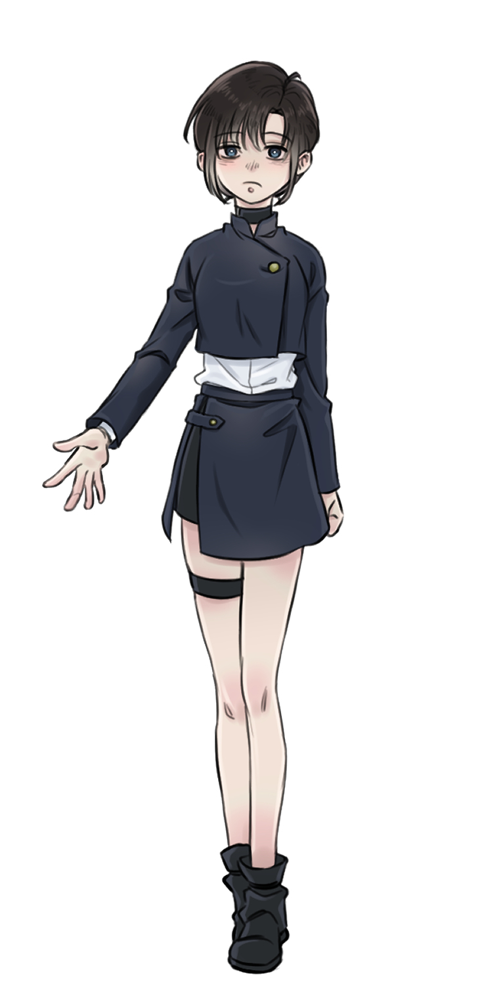

✧ 관리인 : 小森 健
✧ 주요 콘텐츠 : 드림 그림 · 캐릭터 프로필 · 관계 서사
✧ 사이트 주소와 외부 링크는 추후 연결 예정
😎
五条 悟 GOJO SATORU
- 생일
- 1989.12.07
- 소속
- 도쿄 주술고전
- 등급
- 특급 주술사
- 키워드
- 육안 · 무하한 · 최강
늘 자신만만하고 장난기 많은 사람. 건을 자꾸 놀리지만 진심 어린 거절은 존중한다.
고죠 사토루 × 코모리 건
주술회전 고죠 사토루 드림 창작 아카이브.
五条悟 × 小森健
『呪術廻戦』五条悟の夢創作アーカイブ。
여기는 고죠 사토루 × 코모리 건 중심의 비공식 개인 드림 창작 아카이브야. 공식 작품 및 제작사와 관계없어.
그림, 일상, 이야기, AU 설정 등을 조금씩 기록할 예정이야. 개인 창작과 드림 요소가 있으니 취향에 맞게 둘러봐 줘.
늘 자신만만하고 장난기 많은 사람. 건을 자꾸 놀리지만 진심 어린 거절은 존중한다.
소심하고 쉽게 놀라지만, 친구와 아이들을 위해 무서운 채로 움직인다. 하찮아 보여도 무력하거나 멍청하지 않다.
주령을 볼 수 있다는 이유로 배척받거나 보호자를 잃은 아이들이 안전하게 지낼 집을 마련했다. 아이들이 반드시 주술사가 될 필요는 없다고 생각한다.
검은 머리, 목덜미 쪽 짧은 묶음머리, 눈가를 덮는 긴 앞머리, 짙은 남색 눈. 둥글고 햄스터 같은 얼굴. 작고 아담하며 날씬하지만 야구로 단련된 근력이 있다.
남색 고전 제복은 허리까지 오는 짧고 몸에 맞는 재킷과 그 안에 입는 흰색 셔츠로 구성된다. 재킷은 높은 칼라와 비대칭 여밈이 특징이며, 허리 부분에는 흰 셔츠가 넓게 드러난다. 치마처럼 보이는 실루엣의 짧은 반바지와 검은 부츠를 착용한다. 왼쪽 허벅지의 검은 밴드는 야구 시절부터 사용한 스포츠용 보조 밴드로, 타격과 급격한 방향 전환 때 지지 다리로 많이 쓰는 왼쪽 다리의 근육을 가볍게 보조한다. 별도의 주술적 기능은 없다.

MBTI: INFP · 상상력이 풍부하고 자기만의 가치관이 뚜렷하다.
소심하고 쉽게 겁을 먹는 성격. 쉽게 놀라고 겁먹고 얼어붙지만, 친구와 아이들을 위해 무서운 채로 움직인다. 판단이 느리고 적극적인 사람에게 휩쓸리기도 하지만 정말 중요한 순간의 “싫어”, “안 돼”는 단호하다.
상상력이 풍부해 혼자 여러 가능성을 떠올리다가 상대의 말이나 표정을 오해하기도 한다. 실제로 일어나지 않은 일까지 미리 걱정하며 겁먹을 수 있다. 말수가 적거나 멍해 보여도 머릿속에서는 여러 생각이 오간다. 그렇다고 언제나 오해하거나 판단력이 없는 것은 아니다.
소중한 사람과 아이들의 선택권을 지키려는 개인적 가치관이 강하다. 평소에는 우유부단해도 중요한 선을 넘는 일에는 분명히 거절한다. 직감과 감각이 좋고 독립적으로 임무를 수행할 수 있다.
대표 표정: ( ´0｀) · 동그란 눈, 작게 벌어진 입, 멍한 인상. 결의 <(｀^´)> / <(｀ㅡ´)> · 겁먹음 ( ´д｀;;)
도치기현 시골에서 딸기 농장을 운영하는 조부모의 사랑을 받으며 자랐다. 어린 시절 부모는 특이한 주력과 연관된 주령 사건으로 사망했다.
평범한 학교에서 야구에 재능을 보였고, 당시에는 주술사의 존재를 몰랐다. 친구들과 신사에서 담력시험을 하다가 주령 사건에 휘말렸다. 조사 중이던 ‘창’의 사건과 겹쳤고, 건은 자신도 모르게 배트로 공격을 쳐내 주령을 퇴치했다. 그 과정에서 비정상적인 주력과 술식이 드러났다.
2005년 봄 도쿄 주술고전 1학년으로 편입해 고죠 사토루, 게토 스구루, 이에이리 쇼코와 동급생이 되었다.
사용한 자신의 주력이 약간의 시차를 두고 되돌아오는 체질. 예를 들어 주력 100 중 30을 사용하면 잠시 후 그 30이 회귀한다. 주력 총량이 문자 그대로 무한한 것은 아니며, 타인의 주력을 흡수하지도 않는다.
회귀 흐름이 이미 존재하는 주령을 끌어당길 수 있지만 주령을 생성하지는 않는다. 입학 전부터 반전술식으로 자신을 본능적으로 치료할 수 있으나 타인 치료는 불가능하다.
주력 지속력은 뛰어나도 정신적 피로, 수면 부족, 집중력 저하는 그대로 발생한다.
자신을 향한 공격에 물리적으로 개입할 완벽한 순간, 곧 “지금”을 포착하는 술식. 자동 반사나 자동 방어가 아니며 건이 직접 배트를 휘두르거나 몸을 움직여 공격을 쳐내야 한다.
반사 방향은 타격 각도와 건의 기술에 달려 있다. 궤도가 있고 물리적으로 요격 가능한 타격과 투사체 등에 강하지만, 광역·비물리·공간·정보 계열 공격까지 막을 수는 없다. 영역 밖에서는 과도한 연속 공격이나 신체적 대응 한계에 밀릴 수 있다.
건은 확실한 특급 주술사이지만 최강의 고죠 사토루를 대체하지 않는다. 사토루는 초기에 건의 자가 반전술식과 특이 체질을 의식하며 경쟁하지만, 각성 이후에는 전투력에서 분명하게 앞선다.
건만의 차별점은 공격에 대한 개입과 비정상적인 지속력이다.
건은 고전 교사가 아니라 보육원·아동보호시설의 원장이 된다. 부모를 잃었지만 조부모에게 사랑받으며 자란 경험이 진로의 바탕이다.
주령을 볼 수 있다는 이유로 배척받거나 보호자를 잃은 아이들이 안전하게 지낼 집을 마련한다. 아이들이 반드시 주술사가 되어야 한다고 생각하지 않는다. “하고 싶으면 주술사가 되어도 되지만, 안 해도 돼.”
전문 보육 인력과 상담 인력과 함께 시설을 운영하며, 건 혼자 모든 일을 떠맡지는 않는다.
보육원은 건의 일터이면서 집이기도 하다. 시설 한편에는 부부만의 독립된 생활 공간이 있어 사생활을 지킬 수 있다.
건은 보육원을 일군 뒤 고죠 사토루와 결혼해 함께 살아간다. 결혼을 위해 보육원을 포기하지 않으며, 사토루는 건이 만들어 놓은 아이들의 세계에 합류한다.
아이들 사이에서 사토루는 ‘최강’이나 ‘당주’보다 건의 남편이자 함께 살아가는 어른이다. 사토루가 관계를 앞당기고 싶어 해도 마지막 결정은 건의 의사에 맡긴다.
결혼 시기: 추후 HISTORY에서 확정 예정.
영역 안에서는 요격 가능한 공격에 한하여 평소 신체적 처리량 한계를 넘어 연속적으로 쳐낼 수 있다. 무적이 아니며 요격 불가능한 공격에는 대응하지 못한다. 튕겨낸 공격이 적에게 자동 유도되지도 않는다.
수인: 양손의 검지와 중지를 각각 V자로 펼친 뒤 네 손가락을 #처럼 교차한다. 손가락 사이 중앙에는 뒤집힌 부채꼴 공간이 생기며, 야구장의 부채꼴 필드를 연상시킨다. 배트로 상대의 공격을 받아쳐 방향을 바꾸는 「반각」의 성질을 담은 동작이다.
교차 전에는 V( ´0｀)V처럼 우스꽝스러워 보이지만, 손가락이 겹쳐지는 순간 「연환회향진」이 펼쳐진다. 시각 연출은 중앙 부채꼴에서 야구장 경계선 같은 선들이 퍼져나가는 이미지.
고전 시절 인간관계 기록. 인물별 항목을 눌러 상세 내용을 확인할 수 있어.
처음에는 건의 특급 능력과 자가 반전술식이 흥미로워 가까워짐. 따라잡고 넘어서려는 경쟁심이 출발점.
건이 스구루와 편하게 이야기하는 모습에 연애 감정 자각 전부터 은근히 질투. 교제 후에는 신뢰가 생겨 질투가 크게 줄어듦.
평소 사토루가 빠르게 결정하고 건을 끌고 다니는 관계. 그러나 건의 진심 어린 거절은 존중함.
2006년 여름~가을 사토루가 연심을 자각하고, 가을에 즉흥적으로 고백. 건이 생각할 시간을 가진 뒤 겨울부터 교제.
사귀기 전에는 머리 쓰다듬기, 소매·손목 잡기 등 장난스러운 접촉. 연애 후 손잡기와 포옹은 자연스럽지만 첫 키스는 건이 먼저 시작.
초기에는 사토루보다 접근하기 쉬운 동급생. 건의 말이 끝날 때까지 기다려줌.
건의 술식을 연구하고 대련도 함께하는 호기심 많은 주술사.
건이 먼저 스구루에게 기대다가, 나중에는 스구루가 건에게 속내를 털어놓게 됨.
주령을 삼키는 고통에 대해 건이 편견 없이 묻고 딸기 사탕을 건네는 장면.
스구루의 고민을 한 번의 대화로 치유하지 않음. 리코 생존, 동료의 존재, 조부모를 향한 건의 애정 등이 함께 작용해 다른 길을 선택할 여지를 만든다.
둘만의 여고생 같은 시간: 스티커 사진, 폴더폰 꾸미기, 간식, 머리핀, 파자마 파티, 수다.
쇼코는 건을 특급의 연구 대상이 아닌 평범한 여자아이로 대해줌.
일상에서는 쇼코가 건을 돌보지만 위험할 때는 건이 떨면서도 쇼코 앞에 섬.
“쇼코는 내가 지켜야 해.” 건의 확고한 보호 본능. 성인이 된 뒤에도 우정 유지.
2006년 입학하는 한 학년 후배. 건은 작고 소심한 선배지만 두 후배를 매우 아낌.
나나미는 건의 온화함과 전투 시의 용기를 모두 보고 신뢰하게 됨.
하이바라는 밝고 적극적이며 건과 훈련하고 딸기 간식을 먹는 것을 좋아함.
하이바라는 이 세계에서 살아남음. 특급 인력 증가로 임무 배정이 달라져 위험 임무를 후배 둘만 맡지 않게 됨.
그림을 넣을 준비가 끝나면 이곳이 우리 작은 전시실이 될 거야.
커플 일러스트 자리 01
커플 일러스트 자리 02
낙서 자리 01
※ 지금은 그림 대신 임시 카드가 표시돼. 나중에 직접 그린 그림으로 교체하면 돼.
우리 세계선의 시간표. 확정되지 않은 사건은 나중에 채울 거야.
GOJOKOMO의 외부 계정과 링크를 모아둔 곳이야.
✦ GOJOKOMO ♡ XTwitter / X : @GOJOKOMO
이 사이트는 비공식 개인 창작 사이트야. 링크 공유 시 출처를 남겨줘.